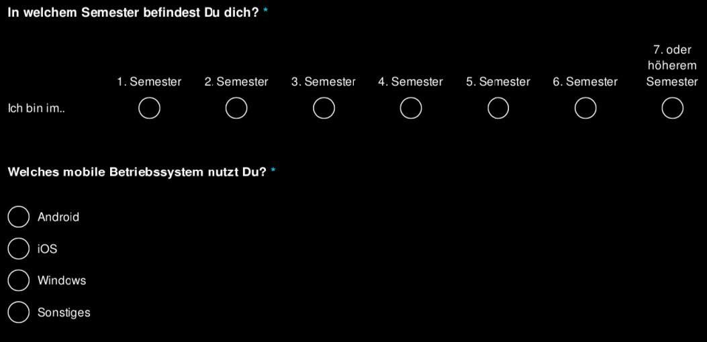
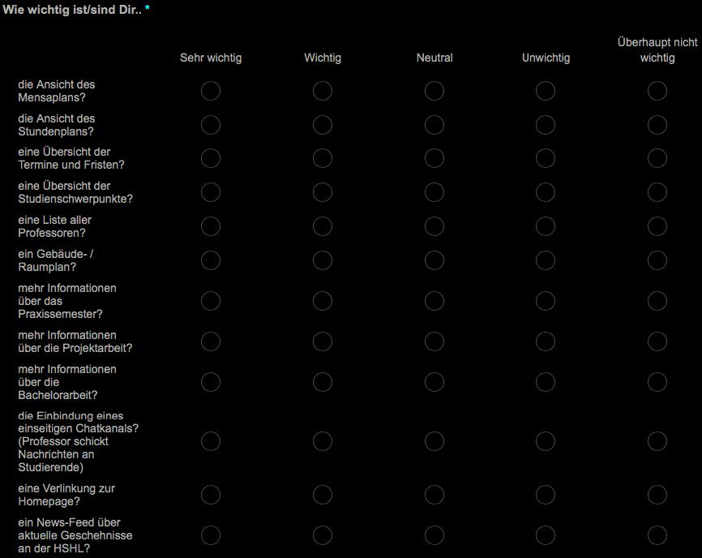
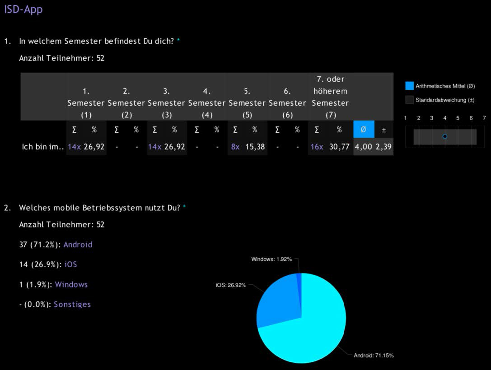
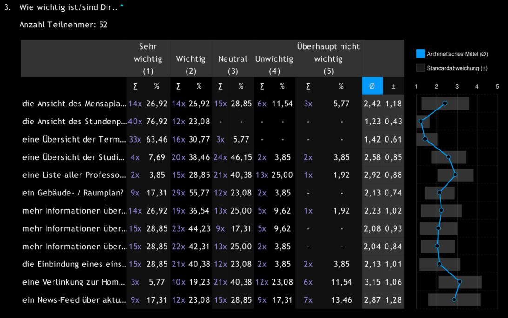
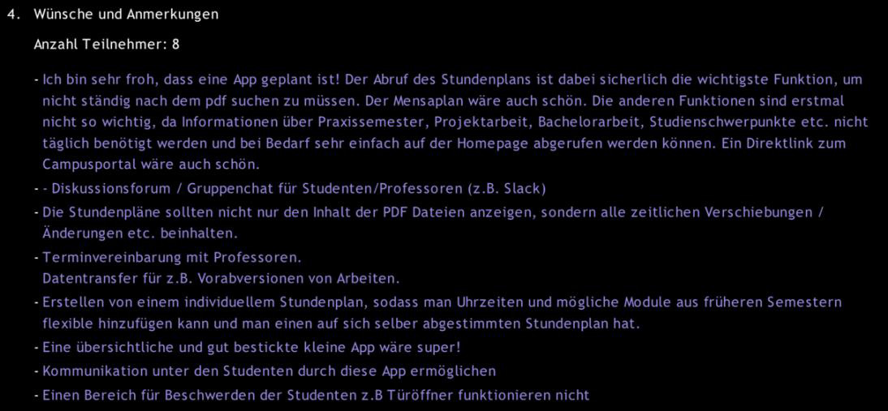

Ideenentwicklung
Essence
Stakeholders

Opportunity


Requirements

System

Work


Team


Way of Working

Einführung
Die Idee
- Grundlage eines Projekts ist eine Idee
- Kann auch extern entstehen -> Dienstleistung
Design Thinking
- Aktuell beliebte Methode für kreative Ideenfindung
- Wird im 7. Semester vertieft
Zehn Prinzipien guten Designs
Prinzipien nach Rams
- Gutes Design ist innovativ.
- Gutes Design resultiert in nützlichen Produkten.
- Gutes Design ist ästhetisch.
- Gutes Design macht ein Produkt verständlich.
- Gutes Design ist unaufdringlich.
- Gutes Design ist ehrlich.
- Gutes Design ist zeitlos.
- Gutes Design ist gründlich bis ins Detail.
- Gutes Design ist umweltfreundlich.
- Gutes Design ist minimales Design.
Techniken
Befragungstechniken
Ermittlung expliziten Wissens durch
- Interviews
- Fragebögen
Beispiel Fragebögen





Kreativitätstechniken
Erarbeitung von Innovationen durch
- Brainstorming
- Perspektivenwechsel
- Analogietechnik
Dokumentenzentrierte Techniken
Wiederverwendung existierender Anforderungen
- Systemarchäologie
- Perspektivenbasiertes Lesen
- Wiederverwendung
Beobachtungstechniken
Beobachtungen hinterfragen und Prozesse optimieren
- Feldbeobachtung
- Apprenticing
Visionen und Ziele
Einführung
- Dienen dem Abgleich von Anforderungen („Ist diese Anforderung zielführend?“)
- Zeigen Motivation und Gründe der Systementwicklung
Definition
- Realitätsnahe Vorstellung der gewünschten Zukunft
- Keine Aussage über das WIE
- Ziele verfeinern und operationalisieren Visionen
Formulierung von Zielen
- Kurz und prägnant
- Aktiv formuliert
- Überprüfbar und begründet
- Beschriebener Mehrwert
- Ohne Lösungsansatz
- Mit Rahmenbedingungen
- Realisitisch
Beispiele
„Wir liefern Bestellungen bis 10:30 am Folgetag aus.“
„Die Erstellungszeit von Rechnungen soll von 5 auf 2 Arbeitstage verkürzt werden.“
„Wenn der Kollisionssensor anschlägt, muss das System in weniger als 20 Millisekunden den Airbag auslösen.“
Projektvision (Beispiel)
Personas
Klassisch: technische Perspektive
- Nutzer werden nach Rollen unterschieden
- Rolleninhaber werden nicht unterschieden
- Oft unpassendes Modell, gerade für den Enkundenmarkt: Heterogenität in Alter, Geschlecht, Berufen, …
Daher: Nutzerfokus
Jakob (43 Jahre) - Sachbearbeiter Schadensabteilung
- kaufmännische Ausbildung
- 24 Jahre im Beruf
- arbeitet täglich mit dem heutigen System
„Ich will ein System, wo ich alles auf einen Blick sehe.“ „Ich brauche kein intelligentes Programm. Ich weiß genau, was wohin gehört.“
Was ist eine Persona?
- Repräsentant einer typischen Benutzergruppe
- Ziele, Verhaltensweisen und Eigenschaften, die für das Produkt relevant sein können
- Ergebnis einer Marktanalyse
Was müssen wir wissen?
Was möchte der Nutzer mit dem System tun?
- Ziele
- Erwartungen
Was muss der Nutzer mit dem System tun?
- Berufs- oder Aufgabenbeschreibung
- Rolle
- Pflichten und Verantwortlichkeiten
Was befähigt den Nutzer seine Arbeit zu erledigen?
- Ausbildung
- Wissen
- Fähigkeiten
- Erfahrung
- Erfahrung mit Computern
Wie werden Probleme aktuell gelöst?
- Verhaltensmuster
- Modus operandi
Was übt Einfluss auf den Nutzer aus?
- Werte
- Ängste und Wünsche
- Vorlieben
Was weiß der Nutzer über alternative Produkte?
- Vorversionen des Produkts
- Produkte von Marktbegleitern
Personas sollten leben
- Name und Alter
- Bild
- Charaktereigenschaften
- Zitate
- Ein Tag im Leben von…
Klassifikation
Primäre Persona
Produkt und Nutzerschnittstelle werden für diese Personas optimiert
Sekundäre Persona
- Ähnliche Anforderungen wie Primärpersonas
- Ergänzende Spezialanforderungen
Ergänzende Persona
- Ergänzende Sichtweisen
- Gleiche Anforderungen wie Primärpersonas
Non-persona
- Anforderungen, die bewusst nicht berücksichtigt werden
Beispiel: Bild & Name, Details, Ziele

Beispiel: Eye-Catchers